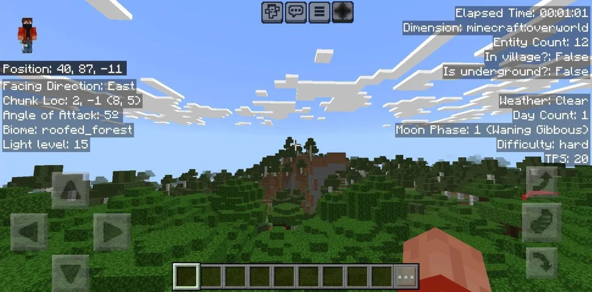
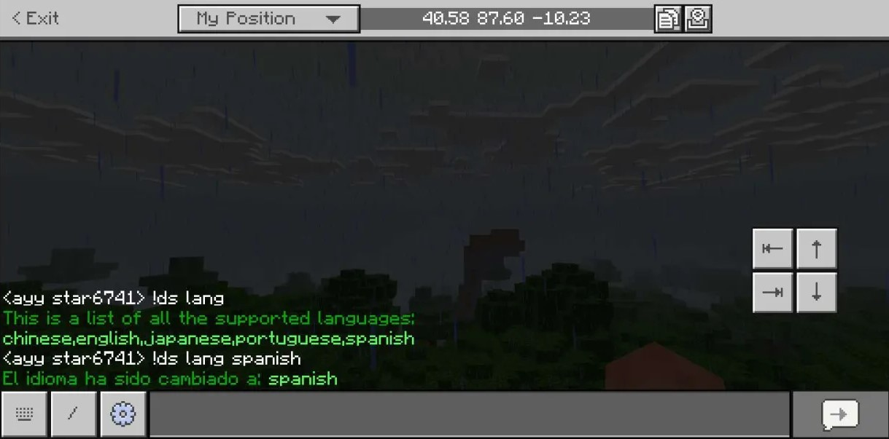
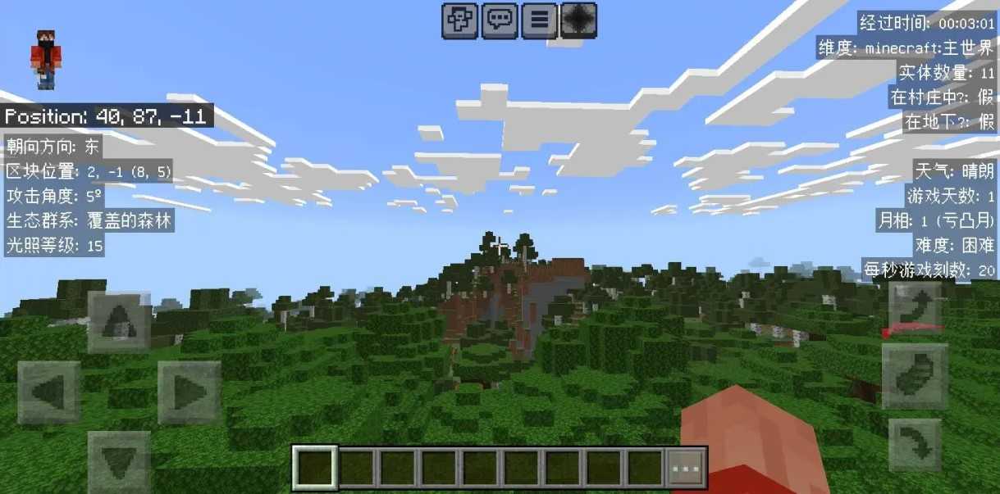
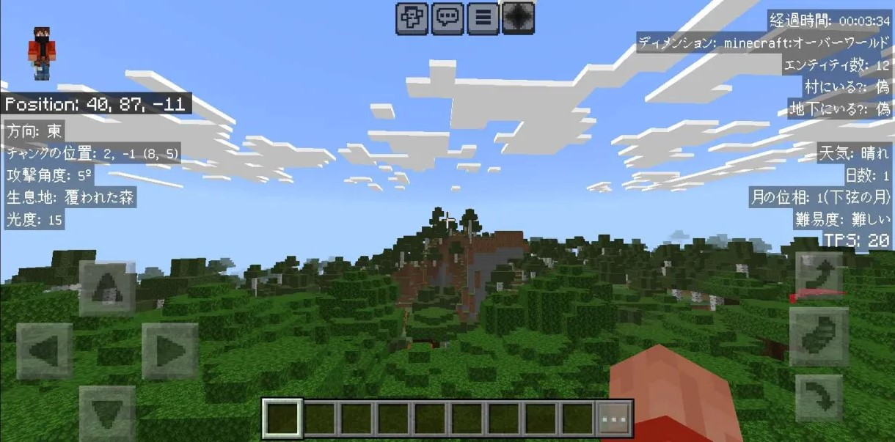
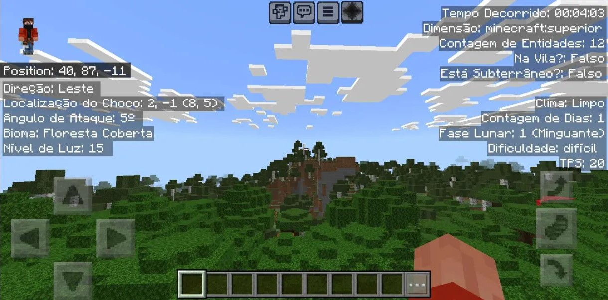
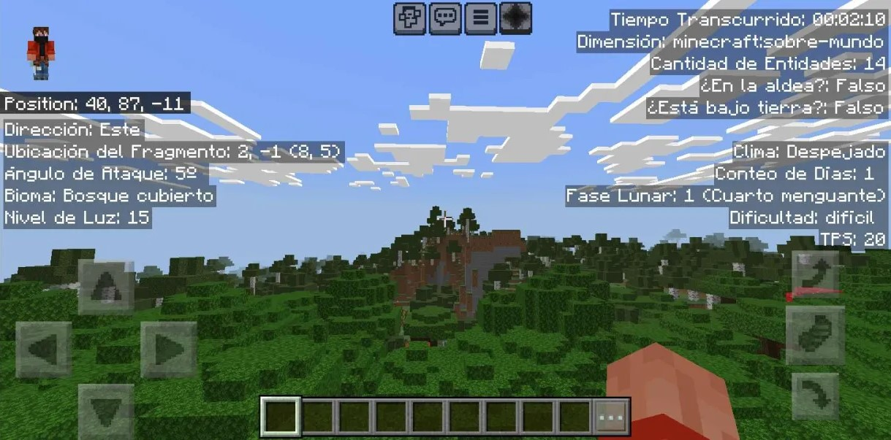

Want to use Java Debug Screen in Minecraft PE/Bedrock? worry not!
This addon makes it possible to enable debug screen in Minecraft PE/bedrock.
This addon is very easy to install you just need to read this page very carefully and you'll get it working in no time.
SCREENSHOT:

FEATURES:
LEFT PANEL:
1. Cardinal Direction: The direction you are facing.
2. Chunk Location: The chunk's coords and your coords in the chunk.
3. Angle of Attack: 0 = looking straigt, 90 = looking up, -90 = looking down.
4. Biome: The biome you're standing in.
5. Light Level: The light level of the block you're standing in.
TOP RIGHT PANEL:
1. Elapsed Time: Time passed since you joined the game.
2. Dimension: The dimension you're in.
3. Entity Count: No. of entitied within 96 blocks of the player(including the player).
4. In Village?: whether you're inside a village.
5. Is Underground?: whether you're underground.
MIDDLE RIGHT PANEL:
1. Weather: The state of the weather.
2. Day Count: The no. of in game days passed since the start of the world.
3. Moon Phase: The current moon phase of the world.
4. Difficulty: The world's difficulty level.
5. TPS: Ticks per second passing in the world (normal: 20).
OTHER FEATURES:
1. Multiplayer compatible.
2. No cheats required.
3. Toggleable.
4. Doesn't leave any permanent effect on the world when you remove it.
LANGUAGES
> Debug screen v-1.1.0 and above offer diffrent languages for debug screen.
> Different players can have different languages even while playing in the same world.
> Languages can be set using the custom commands as shown below:

> Below are the screenshots of diffrent languages supported by Debug Screen:
CHINESE:

JAPANESE:

PORTUGUESE:

SPANISH:

HOW TO INSTALL?
> Download the provided Addon pack.
> Import it into Minecraft.
> Apply the imported behavior and resource pack to your world.
> Make sure "Beta APIs" experimental toggle is enabled.
> Enjoy!
HOW TO TOGGLE?
> Touch: use the button on top.
> Keyboard and Mouse: press F8.
> All Platforms: settings > video > Hide Paperdoll
REQUIREMENTS:
> Turn on "Beta APIs" experimental toggle.
Copyright message:
All of the content of this addon is my original work and if you want to redistribute or use any part of this addon, however little it may be, please ask for my permission first.
Supported Minecraft Versions:
> 1.20.40
> 1.20.50
> 1.20.60
> 1.20.70
> 1.20.80